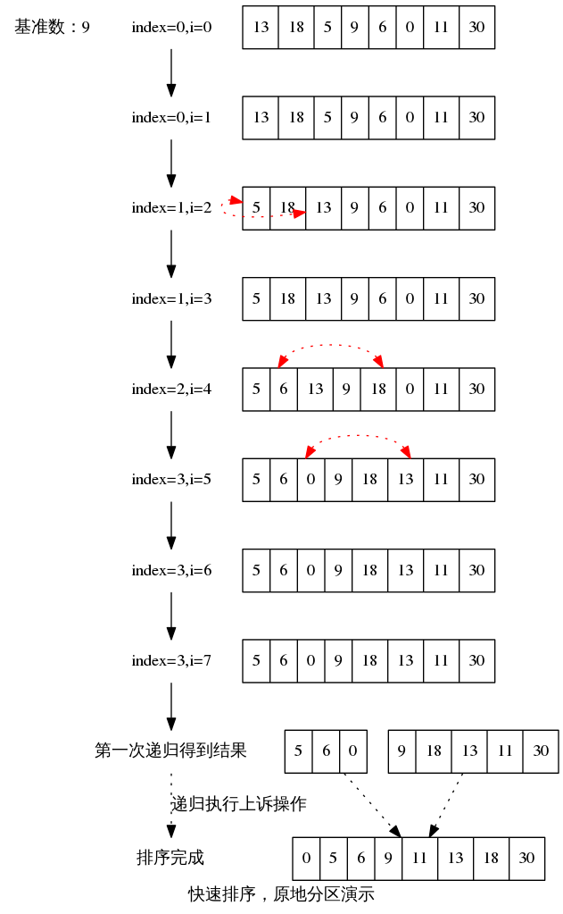

快速排序
快速排序 （quick sort） 是一种相对高效稳定的排序算法。算法主要思想是，从待排序集合中选择一个“基准数”，将队列分成大于基准数和小于等于基准数的两个子集合。对得到的两个集合继续执行上诉操作，直到排序完成。基准数的选择会影响到排序算法的性能。
快速排序也是采用了分治思想的一种排序算法。
图例：
1 算法描述
- 从数列中挑出一个元素，称为 "基准"（pivot），
- 重新排序数列，所有元素比基准值小的摆放在基准前面，所有元素比基准值大的摆在基准的后面（相同的数可以到任一边）。在这个分区退出之后，该基准就处于数列的中间位置。这个称为分区（partition）操作。
- 递归地（recursive）把小于基准值元素的子数列和大于基准值元素的子数列排序。1
2 算法演示图

3 复杂度
在平均状况下，排序 n 个项目要Ο(n log n)次比较。在最坏状况下则需要Ο(n2)次比较，但这种状况并不常见。事实上，快速排序通常明显比其他Ο(n log n) 算法更快.1
4 Java实现
private static Random random = new Random(); public static void quickSort(int[] data) { partition(data, 0, data.length - 1); } public static void partition(int[] data, int begin, int end) { int idx = random.nextInt(end - begin) + begin; int pivotValue = data[idx]; int storeIndex = begin; for (int i = begin; i < end; i++) { if (data[i] < pivotValue) { swap(data, i, storeIndex++); } } swap(data, end, storeIndex); if(storeIndex - begin > 1) { partition(data, begin, storeIndex - 1); } if(end - storeIndex > 1) { partition(data, storeIndex + 1, end); } } public static void swap(int[] data, int i, int j) { if( i == j) return; int tmp = data[i]; data[i] = data[j]; data[j] = tmp; }
5 性能测试
本人PC上做的性能测试，仅简单测试了一下快速排序的性能，可能不是非常严谨与客观，结果仅作参考吧。
| 数组长度 | 耗时 .ms |
|---|---|
| 10000 | 14 |
| 100000 | 66 |
| 500000 | 68 |
| 1000000 | 135 |
从上述测试结果上，QuickSort的性能和稳定性还是特别理想的，不愧它的名字啊。之后会结合上其它排序算法做一个比较。